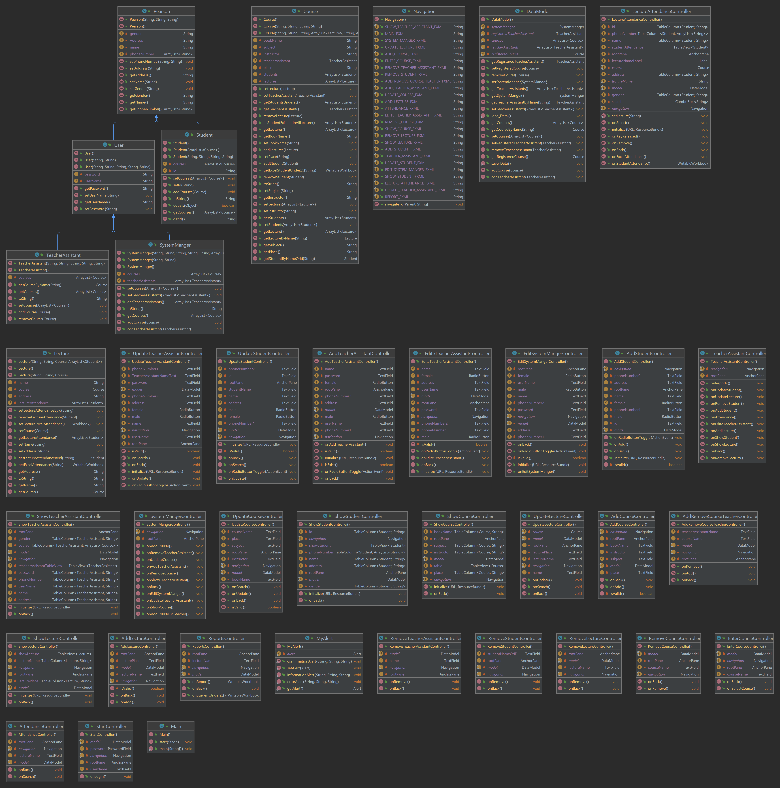
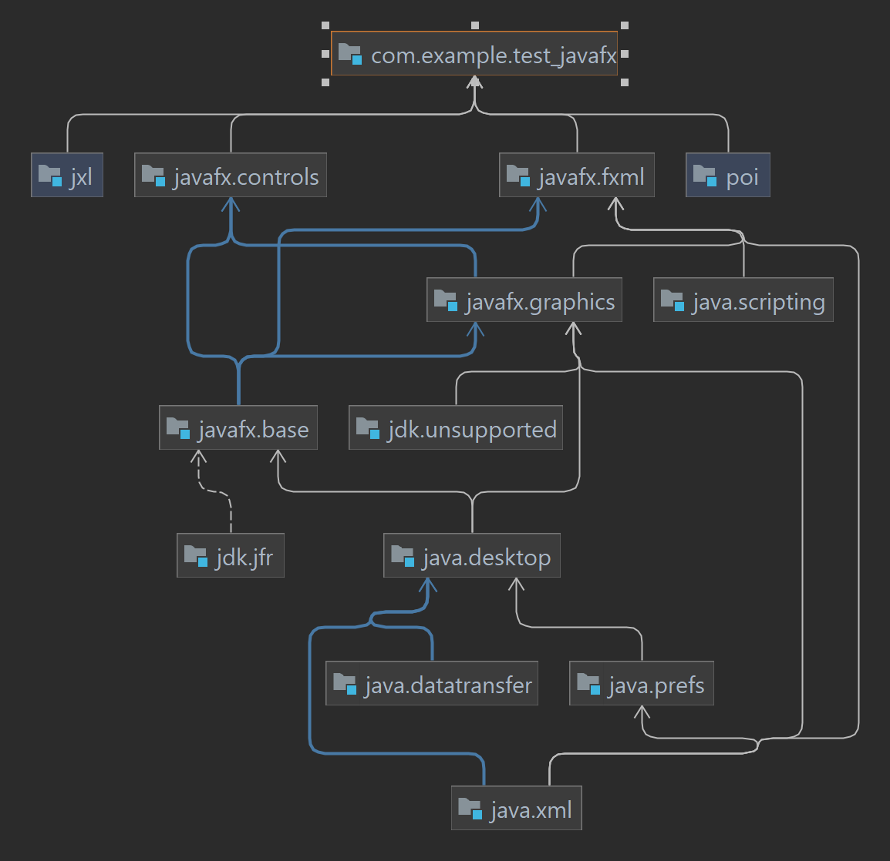

01 · Courses
Course administration
Create, edit, search, and assign courses with their locations, instructors, and teaching assistants.
A polished university workflow for courses, lectures, students, teaching assistants, attendance records, and exportable reports.
The application keeps the everyday work of system managers and teaching assistants in one focused desktop experience.
Create, edit, search, and assign courses with their locations, instructors, and teaching assistants.
Maintain student profiles, teacher-assistant accounts, and course membership in a structured model.
Record attendance, review enrolled students, and import attendance lists from Excel files.
Export lecture attendance, individual student summaries, and students below the 25% attendance threshold.
Application data is saved locally under data/attendance-data.dat and remains outside version control.
System managers and teaching assistants receive focused navigation for the actions they need to perform.
The project is a JavaFX desktop application, so this page is a live product showcase and documentation hub rather than a browser-executable demo.
admin, password admin@gmail.com. Change the credentials after first use.git clone https://github.com/MahmoudAlmodalal/student-attendance-management-system.git
cd student-attendance-management-system/StudentAttendanc
mvn clean javafx:runThe codebase follows a modular JavaFX layout with separate controllers, models, FXML views, local persistence, and Maven build configuration.

